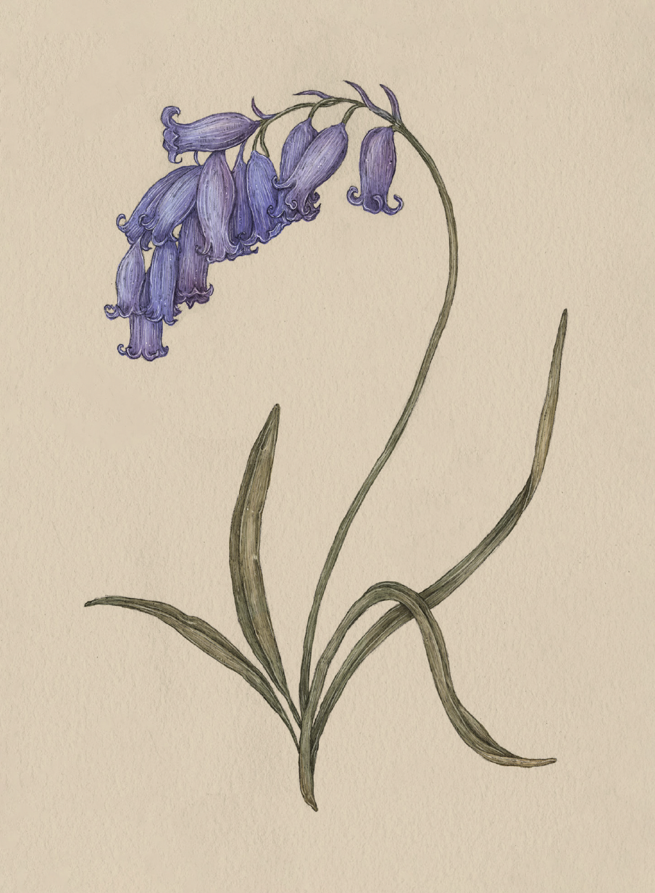

Plate BLUEBELL
The Language of Flowers
Bluebell Study

Bluebell
Hyacinthoides
Definition: A flower associated in floriography with humility and faithfulness.
Meaning
- Humility
- Faithfulness
Origin
The bluebell's appearance inspired its associations with humility and faithfulness. The tranquil,
bell-shaped flowers bow down on the stem, shying away from the sunshine as though showing contrition.
Pair With
- Peony for forgiveness for violating societal norms
- Passionflower as a gift for someone preparing for a religious sacrament